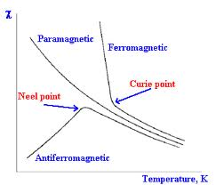

The materials which are strongly attracted by magnet such as iron, steel, nickel, cobalt and some of their alloys, are known as ferromagnetic materials. Their permeability is very high. It is of the order of several hundreds to many thousands. For the purpose of electrical engineering it will suffice to classify the materials simply as non-ferromagnetic and ferromagnetic materials. The former includes materials of relative permeabilities practically equal to unity. Ferromagnetic materials have permeabilities much much greater than unity. Paramagnetic and diamagnetic materials fall in the category of non-ferromagnetic materials.
Ferromagnetic materials are of two types :
- Soft magnetized materials (can be easily magnetised)
- Hard magnetic materials (retain their magnetism with great tenacity)
Soft magnetized materials:
- They have high permeability, low coercive force.
- It can be easily magnetized and demagnetized.
- Hysteresis can be extremely small.
- Soft ferromagnetic materials are iron and its alloys with nickel, cobalt, tungsten and aluminium.
- They are suitable for applications involving electromagnets, electric motors, generators, transformers, inductors, telephone receivers, relays,etc.
- They are very useful for magnetic screening.
- They can attain high degree of crystal purity through proper heating and slow annealing.
Hard magnetic materials:
- They have relative low permeability, very high coercive force.
- These are difficult to magnetize and demagnetize.
- Typical hard ferromagnetic materials include cobalt steel and various ferromagnetic alloys of nickel, aluminium and cobalt.
- They retain high percentage of magnetization.
- Suitable for use in loud speakers etc.
 by
by